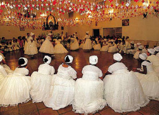
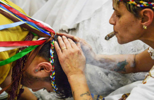

Rituais
No início dos rituais, o médium salda e pede permissão aos oriás para que possa proceder seu trabalho do dia. Logo, a casa é defumada, retirando todas as energias pesadas do ambiente e das pessoas que lá estão. Em seguida, todos saldam os orixás e entidades, a fim de iniciar o ritual.
Durante o ritual, todos dançam e cantam cantigas sagradas, enquanto o médium incorpora uma entidade, aquela que curará e aconselhará as pessoas presentes no terreiro. Também ocorre as oferendas com itens simples, porém simbólicos, com o intuito de agradar um Orixá específico.
O médium também realiza o passe, onde descarrega as más energias e eleva as boas da pessoa, além de benzer o indivíduo, dando conselhos do preto-velho

🔵
